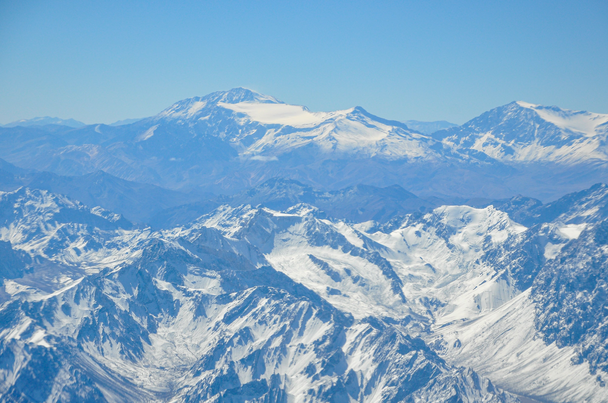

Mount Aconcagua is the highest mountain in the Americas. It is located in the Mendoza province of Argentina, pretty close to the border with Chile. It stands at about 22,837 feet tall. Climbers from all over the world come here to try and reach the summit. You can see basic trail maps and park updates on the Mendoza Government Site.
Climbing the Mountain

The altitiude here is high.
Even though the mountain is super tall, the normal route to the top is actually a walking route rather than a technical rock climb. This means you do not need special ropes or axes to climb it. However, the freezing weather and thin air make it really hard, and many people do not make it to the top.
Quick Mountain Facts
Here are some of the main facts to know about the mountain park area: